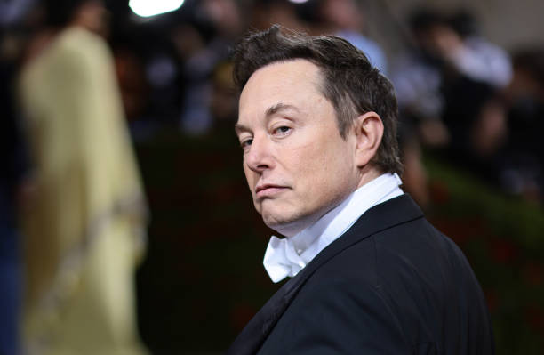

Elon Musk
Enterpreneur & Co-Founder of Tesla and Paypal

Elon Musk created and sold a video game to a magazine when he was just 12 years old
Here's a time line of Elon's life:
- 1971 - Born in South Africa
- 1991 - Blastar was a game written by him
- 1995 - Musk received his Bechelor in Physics and Economics from the University of Pennsylvania
- 1996 - Musk and his brothers started online software startup Zip2
- 2000 - Musk co-found X.com, an online financial services and e-mail payment company
- 2002 - Musk founded space Exploration Technologies
- 2004 - Investment Tesla Motors
- 2006 - Musk provided the initial concept for SolarCity
- 2012 - Tesla began delivery of its four-door Model S
- 2021 - Anonymous sends a massaye to him after tweeting down the crypto market
- 2022 - Musk takes a next step and offers to 100% of Twitter
"If you get up in the morning and think the future is going to be better, it is bright day. Otherwise, its not." --Elon Musk